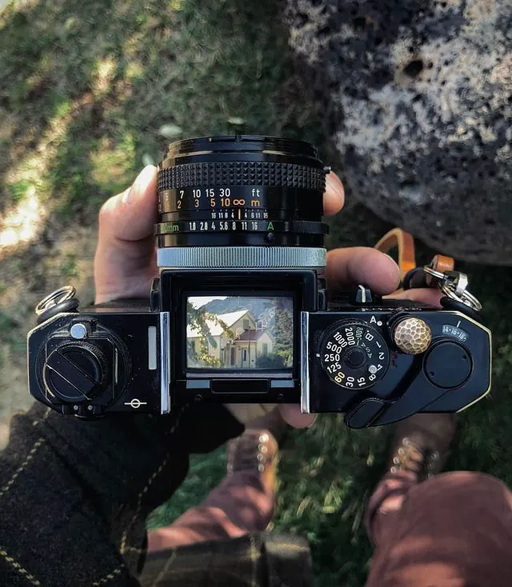

Preservando a alma da fotografia analógica.
RetrôPixels nasceu da paixão por reviver a textura, os tons quentes e as imperfeições poéticas das fotografias analógicas de época. Em um mundo dominado pela pressa digital e pela perfeição instantânea dos celulares, acreditamos que cada grão de filme e cada vazamento de luz contam uma história única que merece ser sentida e preservada.
Nossa galeria digital é um tributo às câmeras mecânicas clássicas e aos olhares de fotógrafos ao redor do mundo. Reunimos uma coleção curada de fotografias tiradas com três modelos lendários de câmeras analógicas. Cada imagem aqui exposta captura não apenas uma paisagem ou um momento, mas também a identidade mecânica singular da câmera que a registrou. Explore, compare as lentes e sinta a passagem do tempo através das nossas lentes vintage.
Explorar Câmeras